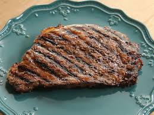

A steak is a thick, flat cut of meat—most traditionally high-quality beef—sliced perpendicular across the muscle fibers to enhance tenderness. Primarily harvested from the less hard-working rib and back sections of an animal, steaks are highly prized for their structural blend of lean muscle, rich fat marbling, and structural collagen. While beef is the golden standard, the term also applies to other meats, thick cross-sections of large fish, or even hearty, thick-sliced vegetables like portobello mushrooms and cauliflower